Watch Tower
Scripts in
scripts/quests/quest_itwatchtower/NPCs involved
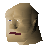
Ogre guard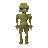
SkavidItems involved
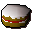
Cake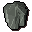
Crystal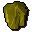
Crystal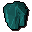
Crystal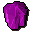
Crystal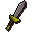
Damaged dagger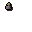
Explodingvial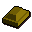
Gold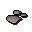
Ground bat bones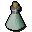
Magic ogre potion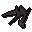
Nails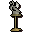
Ogre relic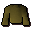
Old robe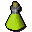
Potion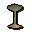
Relic part 1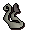
Relic part 2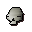
Relic part 3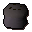
Rock cake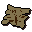
Skavid map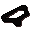
Tattered eye patch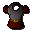
Unusual armour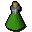
Vial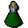
VialInvolvement is derived from identifiers referenced by the quest scripts.